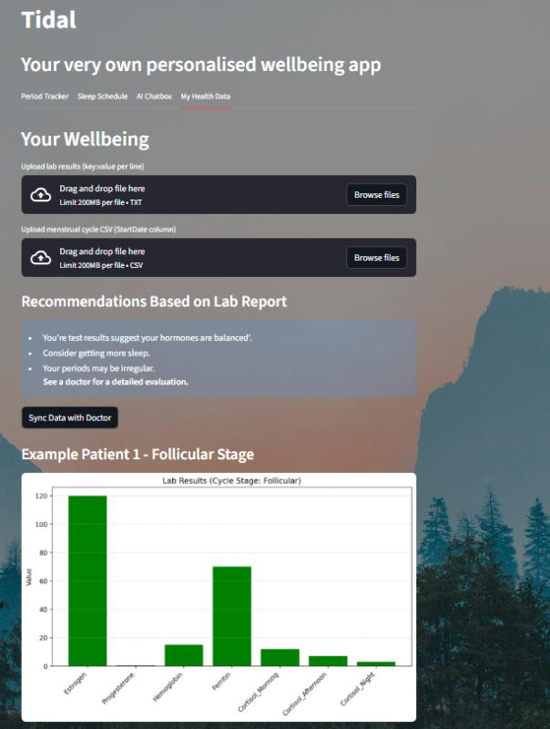
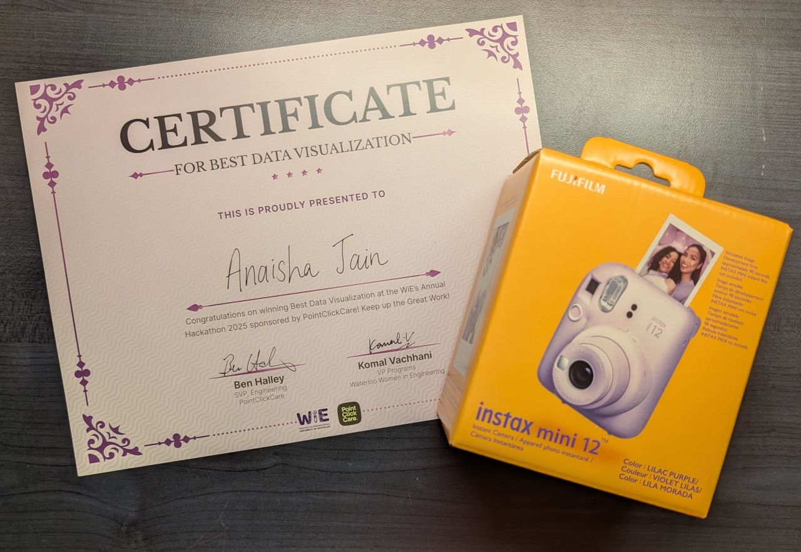

Abstract
This project came to life during the WiE hackathon where they asked for an intersection of AI and healthcare. In our project tidal, we bring a holistic approach to healthcare and help women take care of themselves, even in the busy clutter of everyday life. In the project we acknowledged the unique challenges women face and built this to empower women to understand their patterns, embrace their bodies, and take their health in stride. We managed to win the category for Best Data Visualisation at the end of the Hackathon!
We used Streamlit, OpenAI API, and Python/Pandas to bring this project to life. In this app women would upload their period cycles sleep schedule, and blood tests/other medical documents, and Tidal's AI assistant would answer personal questions based on their current timing of their period cycle, sleep schedule, and documents uploaded. It would also give users a visualisation of their results. All of this was made using Pandas and streamlit to help analyse and visualise data.

Figure 1: This helps users visualise their results.

Figure 2: Certificate and the Prize we won!